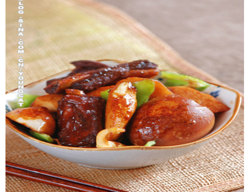

生活 | 影视 |娱乐 | 其他
|返回日志列表
生活 | 影视 |娱乐 | 其他
|返回日志列表
 饮食日志
饮食日志  文章：初冬时节怎么能少得了炖菜呢----《酱炖仔排》
文章：初冬时节怎么能少得了炖菜呢----《酱炖仔排》作者: 黄晶晶 录入: 黄晶晶 更新时间： 2009-11-3 16:42:00 点击数： 211 审核人： 黄晶晶
《酱炖仔排》
酱炖仔排
材料：仔排500克，鸡蛋3-4个，茭白4根，青椒1个，八角1个，葱姜适量
调料：甜面酱，料酒、老抽，糖，鸡精各适量
做法：
1、1、仔排焯水后洗净
2、2、锅内热油，四成热时，下入仔排煸干水份后下入甜面酱煸香煸匀，加入老抽调色
3、3、调入料酒，加入开水没过仔排面，放入姜片、葱结，大烧开，改小火
4、4、煸仔排的同时另取锅，将鸡蛋煮熟去壳后随即放入仔排中同炖
5、5、在炖仔排的时候将茭白去皮，切滚刀块，将青椒切块
6、6、仔排炖满1小时后，加入茭白与青椒，加糖与鸡精调味，待茭白一断生即可起锅
告亲爱的筒筒们，新浪升级，我受邀做小白鼠测试新版本，所以我原先的家装有变，我会尽快重新装修成原样，请不适应的筒子暂且忍耐哈！